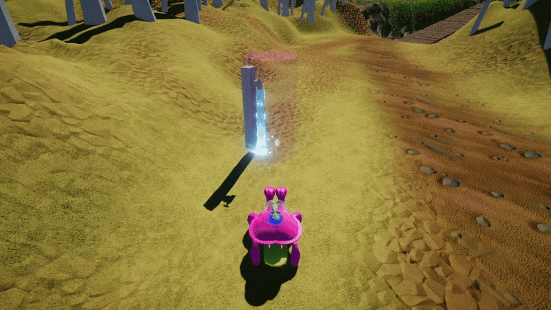
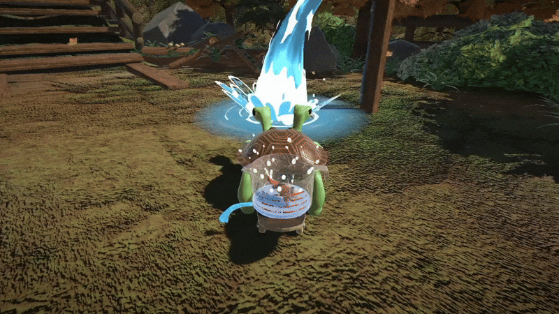

Tipsy Turtles
Tipsy Turtles is a 3rd person cooperative driving game where you and a friend play as conjoined turtles Wee and Woo, trying to save fish from polluted waters.
Myself and four others made Tipsy Turtles over the course of five months for our final project at Vancouver Film School. We also worked with two other students from the sound design campus for the SFX and music. On the team I was responsible for designing and implementing the UI for the game, managing the project, creating the visual effects, putting together the cinematics, and documenting the game's core mechanics.
Fish Bowl UI
The core of our game was in the obtuse movement controls that the players had to overcome as a team to progress. When we researched other games with obtuse movment controls we found that what made those games so memorable was the silly mistakes that came from using unintuitive controls. However unlike most of those game, our game didn't have a failure state attached to misinputs, because of this We were worried players would just take the game slowly to prevent themselves from making mistakes. Taking the fun out of the game. So we added a time pressure element to the game to make players more anxious as they played, pushing them to make those silly mistakes. This time pressure element was having the fishbowl that Wee and Woo were transporting leak over time. This forced players to move quickly as they tried to beat the fishbowl to the next checkpoint so that they could refill the fish bowl. Which also helped tie narrative into the gameplay.
I was tasked with designing and implementing the UI and gameplay for both the fishbowl and check points, and one of the decisions I made early on was that the UI for the fishbowl should be diagetic. This was because anything we did for the UI to show that the fishbowl was running out of water we would also need to do for fishbowl's in game model to maintain the game's emersion, since it would always be in the center of the screen. Making the UI diagetic prevented us from duplicating out work, and allowed us to put more effort into making the fishbowl look as good as it could in the short time frame that we had, which was important since the fishbowl was a core part of our gameplay, and narrative.

After creating the A-Z of our game we realized that the over head veiw we had originally planned for didn't give players the right angle to clearly see where the water level of the fishbowl was. To fix this I proposed to the team that we could tilt the camera down to be directly behind the characters. After discussing it we decided to move forward with the change, much to the dismay of our environment artist, (sorry Jaylon). But we ran into another problem. Even though the fish bowl wasin the center of the screen, we found that during our blind playtests players didn't notice the fishbowl, or that is was leaking, and would often lose without understanding why. To draw more attention to the fishbowl as it was getting low I talked to Mim (the character artist) on the team and asked if she could create some animations for the fish. After she got them blocked out I hooked them up so that they would play when the fishbowl got low. After that I added some splashing effects and made them white to create high contrast in order to grab the attention of our players. This worked and players were now noticing the fishbowl in our blind playtests. Buuuuuut I noticed that now there was confusion around when the fishbowl was full, so I talked to Mim again to to get one more animation made to play when for when players had finsihed filling the fishbowl.

Making our UI diagetic came with a lot of challenges, but in the end I'm happy with the choice we made. It gave us the opportunity to inject a lot of personality into the fish's character which allowed players connect more with the game as a result.